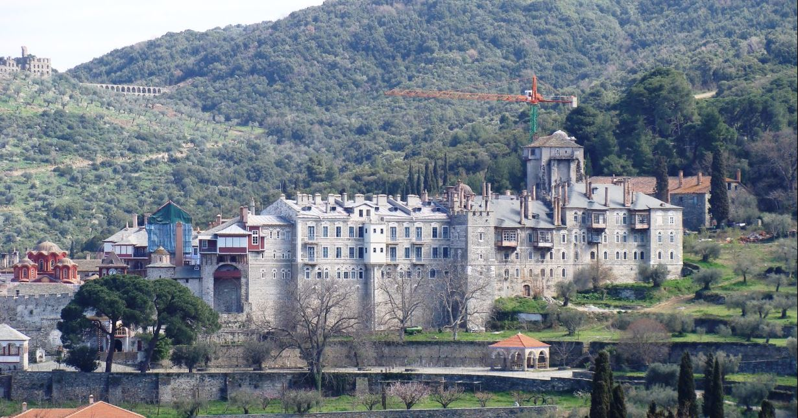

Ammouliani este conectata strans cu traditia din Muntle Athos. Pe vremuri, insula facea partea din patrimoniul Manastirii Vatopedi din Muntele Athos, si era locuita de calugari, care administrau pamanturile. Ocupatia lor principala era cultivarea pamantului si cresterea de animale. La inceputul anului 1925 insula a fost cesionata catre refugiati din Asia Mica si anume cei proveniti de la insulele din Propontida (Gallimi - Pasalimani - Skoupia). Refugiatii, venind din aceste zone, au adus cu ei cultura din Asia Mica, obiceiurile si traditiile lor. Cunoscand marea s-au ocupat in principal cu pescuitul si au reusit in putini ani sa se distinga in acest domeniu.
 Muntele Athos este situat la o distanta foarte mica de insula. Acesta este format din douazeci de Sfinte Manastiri si alte institutii manastiresti iar neoficial are denumirea de "Republica Monastica Autonoma".
Intrarea la republica Muntelui Atos, este permisa numai barbatilor conform "Avaton" si tipicului monahal. Peninsula Athos, care din 1045 se numeste oficial Aghion Oros (Muntele Sfant), avea deja conform marturiilor scrise, 843 de grupuri de asceti. Punctul de plecare a vietii cenobitice organizate la Atos este considerat anul 963 cand a fost ridicata manastirea Megistis Lavras de catre Af. Atanasios.
Insulele Drenia sunt situate la o distanta mica de Ammouliani, pe partea de sud est ale insulei. Complexul a luat numele sau de la cea mai mare in suprafata insula, Drenia. Celelalte insule mai mici, au denumiri precum Feti, Penna, Artemi s.a.
Pe insule veti gasi plaje foarte frumoase cu nisip si cu ape de mica adancime cu un peisaj insular magnific precum si cu maluri abrupte cu roci. Astazi este o destinatie organizata turistic cu umbrele si sezlonguri.